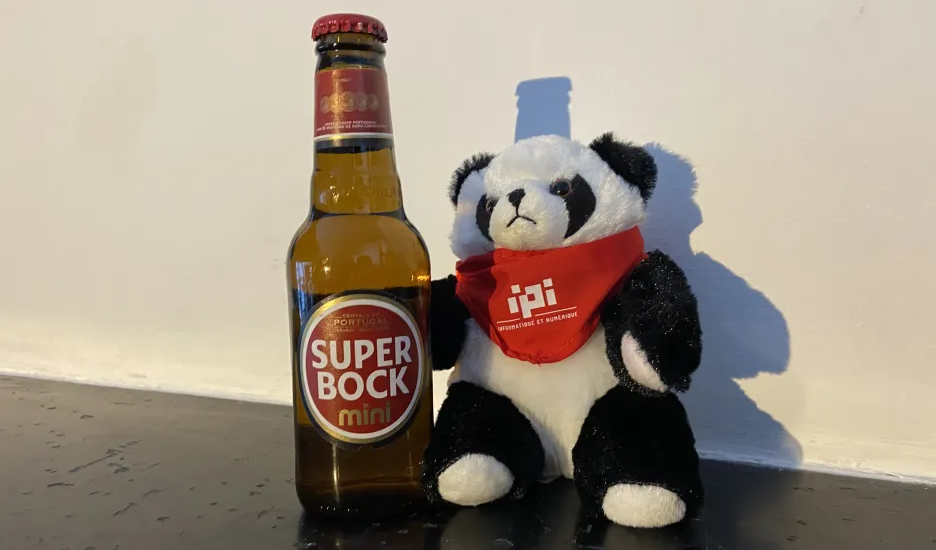

About our trip
Finally, it's time to leave for Porto. The rendez-vous was at 1:15pm at the airport, it was time to meet up with the other class. Our group composed of Ethan, Alix, Adrien, Florian and Pixel was ready to fly to the second biggest Portuguese city. After waiting 3 hours we finally take off for a 2 hours fly. Barely off the plane, problems started. At the luggage receipt, everyone retrieved their own suitcase without any issue.
Only one was missing, the Ethan's one. Because the latter saw it before, he was not worried about it. However, 5 then 10 minutes passed and still no sign of his suitcase, he then observed that only one blue luggage was left that looked like his own. Therefore, he understood that someone made a mistake and stole his suitcase. Fortunately on the thief's luggage was a card with his information. So Ethan called him, he was french and was 30 minutes away from the airport. The man immediately understood his mistake and came back. After waiting for 1 hour, they both exchanged their suitcase and Ethan return to his classmates who was waiting for him in the bus. The bus drove them to their hostel where Miss Villa (the english teacher) took a group picture of both classes. The rooms were previously chosen,so we knew where we have to go: Ethan, Alix, Adrien and Pixel went to their room with Quentin.C, Quentin.G, Lucca and Raphael.On his side, Florian was with Fabien, Benoit and Theo.

When the night came, it was time to eat and we were looking for a typical restaurant near the inn. We walked through the streets for an hour but in vain, so we decided to eat in a Italian dinner. We ate pizzas and spaghetti and then came back to the youth hostel. At the end of the day we were tired of the day and wanted a break before sleeping, so we chose to play "Werewolves" until 2am. After that we went to bed to prepare ourselves to the first day of school in Portugal.

It's time to wake up and to plan the schedule for the shower in our room of seven people. Adrien was mad at Quentin.G because he snored all the night. Because we started class at 11am and that Adrien, Alix and Quentin.C were ready they went to the park in front of the hostel to visit the district. This group took the bus at 10:30am because the second group composed of Ethan, Quentin.G, Raphael and Lucca were not ready. These latter tried to take the next one but the next 2 buses never came until the third one at 10:50am arrived.

They took it but were stuck in the traffic jams so for the first day they were 40 minutes late. The first class of the trip was about the Portugal culture and vocabulary, it was interesting to discover the "Fado" and language in general. At 1pm, we learned from Etienne and Krista that we did not have to stay in the school for the afternoon because it was sunny and they wanted us to enjoy this weather by visiting the city. For the lunch, all our group except Ethan went to the Capra restaurant with Etienne where we discovered that Portuan were swindler. Indeed, they needed to pay for absolutely everything without knowing they had to pay for it.

After that, we walked through the city and ate "pasteis de nata" for the first time of this trip. Ethan who did not have a lot of money try to keep it by walking back to the inn to take pictures for the blog instead of going to the restaurant and he then worked on the blog. Before the dinner we met again and played "President" and "Werewolves" again. After that, Quentin.C offers us to cook. On his side, Ethan ate what Lucca left from his lunch with some watermelon that Theo kindly gave him. Then it was time to go to sleep.
This day was the first with the real schedule for classes. So we needed to take the breakfast between 7:30am and 8:30am after taking a shower one after another. Then, the brave Ethan walked to school under the rain and the rest of the group took the metro. The class this morning was SEO which talked about how is working the search engines but it was hard to follow because the other class was very loud. For the lunch, we went to Lidl to buy some dishes to save money not to spend it all in 3 days.


At the beginning of the afternoon we had to finish our survey that we started in class a few months ago to use it later in the day. After an hour, we went to the "Mercado do Bolhão" where we interviewed some people with our questions. For more information, go to the activities page of our website under the day 3. For the dinner, Lou cooked for Theo and Ethan, it was some pasta and chicken with cream, mushrooms and cheese. After that, as usual, we played "Werewolves" and went to bed.
Our routine was set and again we took a shower one after an other, ate breakfast and went to school. Ethan was not alone anymore to walk to school because Joana and Adrien join him. We knew that it was the last day of Etienne in Porto so we wanted to make him happy by organizing a dinner for him in his honor. The class this morning was about chatgpt: how it works and how to use it correctly.The afternoon was a free time so with our group we decided to come back to the hostel to rest a bit.


In the evening many things happened. Indeed, it was time for the dinner we organized for Etienne, 32 people were there and ate a lot, it was really funny to have so many people eating together. At the end of the meal, everyone walked to their hostels, that is when we left Krista and Etienne that went to sleep. After that, we bought alcohol and stay in the park in front of our inn. After a while, everyone went to sleep except for Alix, Quentin.C, Quentin.G and Ethan. They bought and ate kebabs at 2am but Alix was a bit drunk and it was hard for him to walk. Fortunately, Ethan that did not drink at all helped him acting like the "Sam" of his group. Finally, they went to sleep.
As usual, we took the breakfast after the shower, then we took the metro to go to school, it was the first time Ethan took it here.Today's class was about Python. Unfortunately, the professor was a bit sick and it was hard for him to talk, so he offered us to read texts in his stead to make us practice the IT vocabularies in front the class which was really interesting for us and our learning. Not everyone liked that, indeed, a student who did not want to read insulted his classmate who chose him to read after.

Because it was all in french the professor could not do anything because he did not understand his racist and insulting words. Then we ate and worked for an hour on the blog before the cruise. We had some issues with this latter because we waited from 3pm to 5pm to board on the boat to see the Douro's bridges and to learn some information about them, we were quite disappointed by the waiting time and the goal of the cruise. After that, we took the bus to come back to the hostel. Ethan and Quentin.C cooked for the group during an hour to prepare some Sicilian pastas while Quentin.G and Adrien were watching the rugby match with Pixel. When it was ready, we ate and went to sleep while one of our classmate was jumping from a bridge that we saw earlier in the day.

For this sixth day in Porto, we had to meet up with the bus at 9:30am at the ISLA university so as every morning we took a shower and ate breakfast then went to the school thanks to the metro. The bus took us to the Metyis company where we participated in conferences. The first one talked about what is Metyis, who they are, what they do and how they do it. After that, we visited the Hugo Boss building next to Metyis building because they are in collaboration.

We were lucky to see people working in open-plan offices which gave us an idea of the work conditions we will experience later. Then, we add a break when they offered us drinks and snacks. The second conference followed this break. It was presented by two Metyis workers, they explained us their jobs, one works in a front-end service while the second one works on the back-end parts of websites and apps of their clients. They presented some examples of their projects and it was really interesting for us. At the end of the visit, it was time to come back to the school with the bus but Ethan was able to negotiate with Krista to stay there to eat in a local restaurant and that they will come back by themselves.

Our whole group plus Quentin.C and Quentin.G went to a good restaurant where we ate for 7,50€ per person to have: a soup as starter, a complete plate as main course, a drink and a coffee. At the end of the meal, we took a taxi for 6 people for only 12€ for a 23 minutes drive which is not expensive at all for this service. We worked on the blog and take some time for us this afternoon. In the evening, we ate and went to bed.
This day was the first our week-end and decided not to do anything. We woke up late and watched the final of the rugby match between Toulouse and Leinster. Of course, it was Toulouse that won and we celebrated it together with beers and snacks. Pixel was the number 1 supporter, he had the color of the Stade Toulousain on him. We ordered burgers at night and played video games together and then went to sleep.


On sunday, again we decided not to to do many things. However, Ophélie arrived and we wanted to make her discover a part of the city and its culture so we walked for an hour through the city, we stopped by a kind of pub to drink a beer and then went to Mcdonald's and saw that there is a soup in the menu in Portugal. Alix wanted to try it but unfortunately, it was awful. Furthermore, Quentin.G who is a bit clumsy spilled his drink on Ophélie and Ethan, it was okay for this latter who only received a few drops of it, but Ophélie on her side took everything in her bag which damaged most of it. Adrien and Alix took Ophélie back to her hostel while Ethan and Quentin.G took a taxi to come back. Finally, we felt asleep.

This morning we did not do a lot, half of the group woke up for the breakfast and came back to their bed. After the lunch, Alix, Adrien and Pixel, followed by Ophélie, Quentin.G, Joana and Lou went to the beach by bus. They tried to swim in the ocean but it was too cold for everyone except for Quentin.G and Alix who defied the temperature and still stayed in the water.
They made a sand castle for Pixel which became a throne in his honor, they took some pictures of him on his royal chair and went to a little breton restaurant where they ate waffles and crepes. At the end of the afternoon they took a shower after the beach and prepared themselves for a dinner at Ophelie's AirBnb. They ate a cocktail dinner while watching Mask Singer on the TV. Finally, they came back to the inn tired and ready to return to school the next day.


It's time to return to the school schedule, by eating breakfast at 7am and taking the metro to go to school. The first class of the day was about git and github. We did not learn a lot about this subject because we already knew most part of it. We ate at 1pm and prepared our presentation about a part of the french culture. We chose to present alcohol, cocktails and wines.
Ethan created a kahoot with 20 questions at first but we reduced to 13 questions. At 4pm, it was time to present it to Portuguese students, we were at a table to entertain them with our quiz. When school ended at 5pm, we came back to the hostel and ordered pizzas for everyone. Then Ethan, Quentin.C, Quentin.G and Adrien played Switch Sports with golf, bowling, badminton, volley-ball, football, chambara and tennis. After that, we ate the pizzas and went to bed.

It's the last day of school, we took a shower, ate the breakfast and took the subway to the school. Today, the last class of the trip was about Cisco company and their tools that they allow us to use. We remade exercises to train us to use them. At lunch, we ate at Lidl and we walked back to the inn to prepare our luggages and to chill before the evening. For the dinner, we had rendez-vous with Ophélie and some people of the other class at 8pm at a self-serve buffet.

We ate a lot because we were angry against the waiters and the restaurant's policy. Indeed, on the menu it was written that the set menu was at 16,50€ but we had to buy a 2€ drink if we did not want to be expelled from the restaurant. After the dinner, we came back to the hostel to be ready for the travel back home the next day.


It's time to leave Porto, we ate our last breakfast, took our last shower and finished our luggage for the late ones. We took the bus to the airport and waited 2 hours to check our suitcases, we passed the security control without any issues and waited 2 more hours before boarding in the plane. We took off at 1pm instead of 12:40pm and we flied for 2 hours again. And now let us narrate the story of the first fly of our pilot (don't worry it's a joke)... Unluckily for us, the pilot we had was not the best, he tried to land but failed and had to take off once again.
We made some circles above Toulouse before trying again, successfully this time, to land on dry land. We had to wait for 30 minutes in the air because the control station of our airport had a schedule it could not change easily. Each member of the group came back to his own house and took time to chill a bit before coming back to school on the next monday. Pixel, our best and most loyal friend during the trip leave us to return to the IPI school with its fantastic father, our director, Jean-Marc Benito.